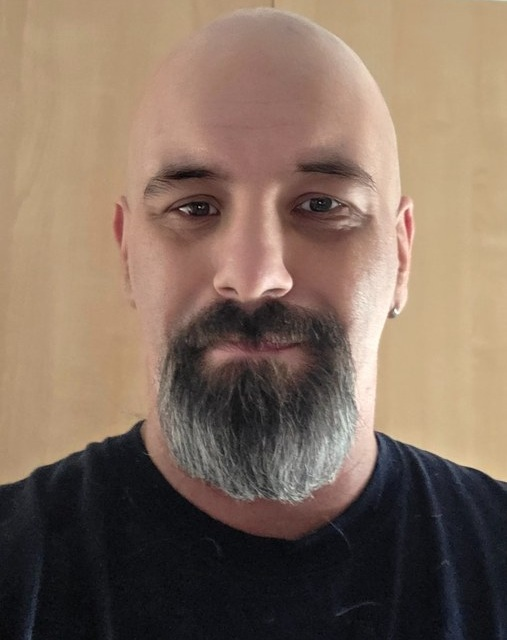

Fondateur
Benoit Cantin
Fondateur du Projet Nova et responsable de la coordination générale de sa phase actuelle de développement public et documentaire.
Orientation généraleCoordinationDéveloppement institutionnel
Projet Nova publie uniquement les personnes, responsabilités et structures qui peuvent être confirmées. Les fonctions requises par le droit électoral seront attribuées et déclarées seulement au moment où elles devront réellement l’être.
Une fonction est publiée seulement lorsque la personne concernée et son rôle peuvent être présentés clairement.

Fondateur du Projet Nova et responsable de la coordination générale de sa phase actuelle de développement public et documentaire.
Pour un parti politique provincial autorisé, Élections Québec exige que certains postes clés soient pourvus en tout temps. Projet Nova les présente ici comme une architecture de préparation, et non comme des nominations déjà faites.
Direction politique légalement déclarée lorsque le statut applicable l’exige.
À formaliserResponsabilité du financement politique, des fonds et des rapports exigés.
À formaliserResponsabilité des dépenses électorales durant une élection.
À formaliserFonctions de gouvernance inscrites au registre applicable.
À formaliserVérification indépendante des rapports financiers lorsque requise.
À formaliserResponsabilité organisationnelle clairement attribuée avant toute collecte élargie de données.
À désigner formellementRéférence externe : Élections Québec — formulaires et guides.
Consolider les règles, les documents, les méthodes de travail et les responsabilités centrales.
Former des groupes locaux avec un responsable identifié, un mandat clair et des règles uniformes.
Coordonner les équipes locales et régionales sans créer de structures permanentes sans utilité démontrée.
Le titre affiché correspond à une responsabilité réellement acceptée et documentée.
Photo, biographie et informations personnelles sont publiées avec l’accord de la personne.
Une personne qui quitte une fonction est retirée ou son statut est corrigé sans laisser croire qu’elle représente encore le projet.